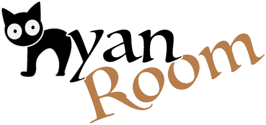
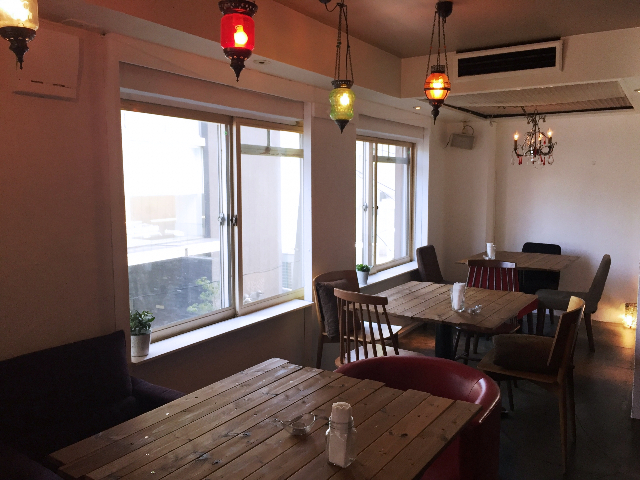
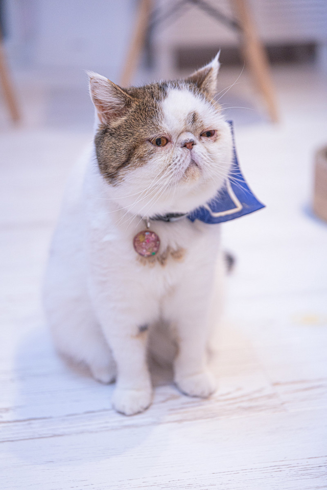
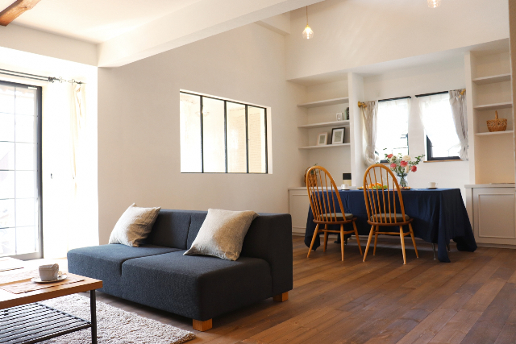
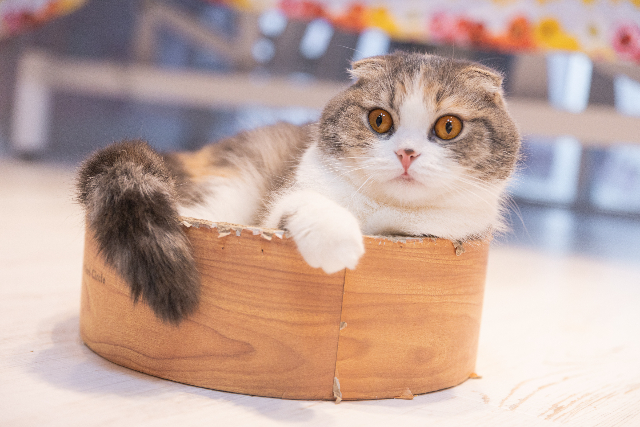
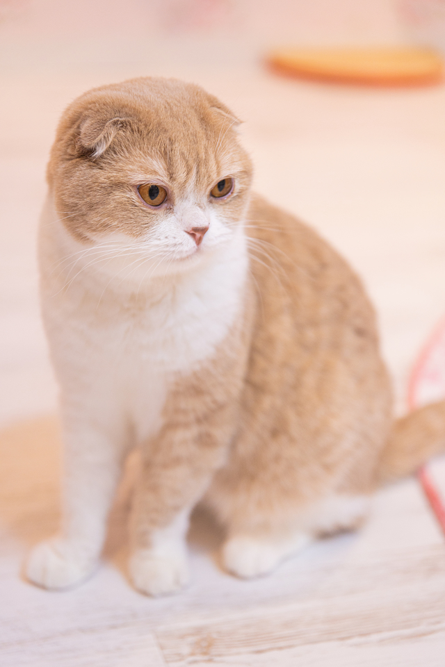
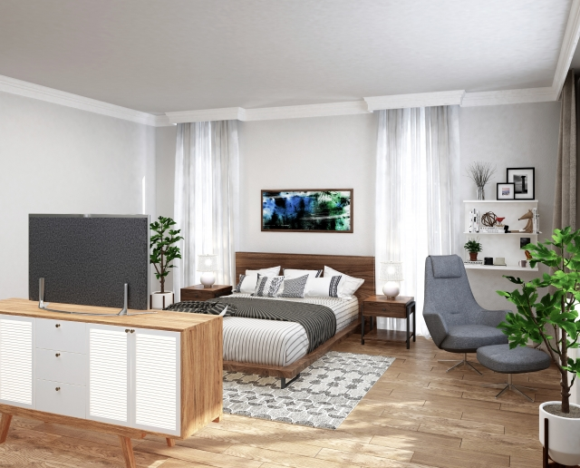
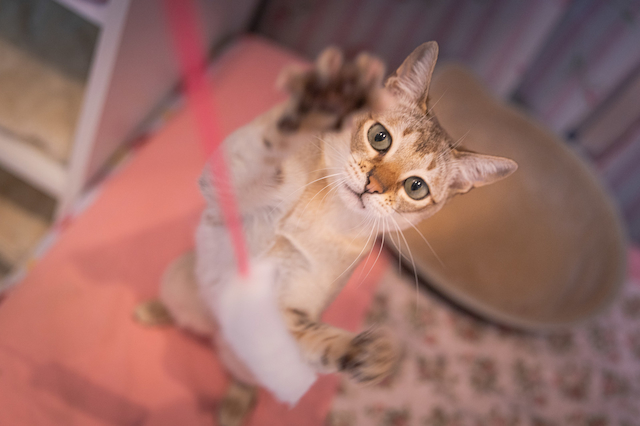

1階にゃんルームは、カフェスペースになっています。
エキゾチックショートヘアーの「ブウくん」をはじめ、人懐っこい4匹の猫ちゃんがが皆さんをお出迎えします。

猫ちゃんたちと一緒に、ゆっくりと読書やお食事、お茶の時間を過ごしてみませんか？
季節に合わせた旬の食材を使ったスイーツやフードも充実しています。
カフェメニューはこちら

2階にゃんルームは、リビングルームになっています。
スコティッシュフォールドの兄弟「キイくん」と「ミイちゃん」たちが、皆さんと遊びたくてウズウズしています。,

6人まで利用できるリビングルームは、ちょっとしたパーティーなどで利用するなど、グループでも利用できるスペースです。
もちろん、お一人様からでもご利用可能です。
お部屋の予約状況はこちらで確認


3Fにゃんルームは、完全個室のプライベートルームです。
甘えん坊の「ワラビくん」達が、皆さんのお帰りをおとなしく待っています。

お部屋は３部屋あり、テレビや音楽、読書など、ソファやベッドで寛ぎながら、猫ちゃんたちとゆっくりとした時間をお過ごしください。
お部屋の定員は2人までですが、ご自分のお部屋のようにご利用いただける人気のスペースです。
